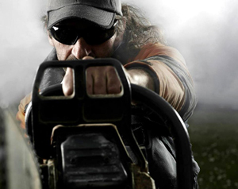
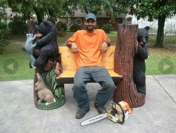
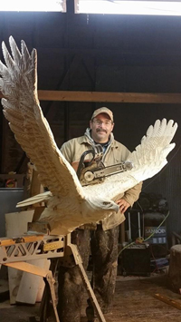
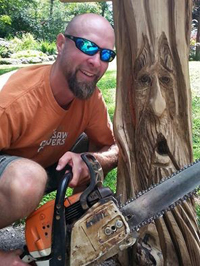
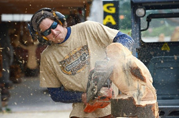
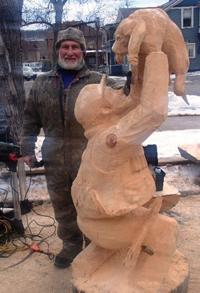
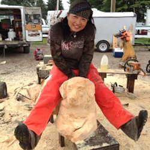
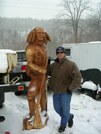

2015 Seminar Archives
15th Annual Ridgway Chainsaw Carver's Rendezvous
Monday February 23
"Chainsaw 101" with Tim Klock, Altoona, PA
Tim Klock began carving in 2003 after nearly destroying his ankle in a timber framing accident. During the long recovery he started carving with a chainsaw to keep from going crazy. Four months after carving his first bear, he was invited to demonstrate his art at Blair County's Keystone Country fair. Three years later, he was competing in the Echo Cup Championship in Oshkosh, Wisconsin. He has also competed in the U.K. at the English open and carved in Carrbridge, Scotland since 2011. Tim is looking forward to another trip across the pond this year.
When he's not traveling and competing he can be found at his studio in Altoona, PA doing commission work and occasionally giving lessons to help other artists achieve their dreams and goals. He has been attending the Chainsaw Carvers Rendezvous in Ridgeway since 2004. Tim accredits half of his knowledge on carving to the ‘Vous and the carvers that attend the event.
Follow Tim at: https://www.facebook.com/timothy.klock.9
Download Presentation Materials (PDF)
Additional Video on Chainsaw Maintenance
"Finishing Sculptures Using Painting Techniques" with Aaron Booker, Albertville, AL
Aaron Booker, 38, from Albertville Alabama, began carving in 2001. He has always been very artistic since a child, started off drawing and from there tried many different mediums that lead him to chainsaw carving. In 2012 Aaron left the home repair/remodeling business to carve full time. He travels to several states in the northeast and south for shows and competitions. He loves using his talent to make a living. He always dreamed as kid that one day he would make his living off of something he created and he is now living his dream.
Follow Aaron at: https://www.facebook.com/pages/Bookersbears/320560007804
Download Presentation Materials (PDF)
Tuesday February 24
"Beyond tools and techniques" with Jeff Mohr, Oxford, WI
Jeff Mohr is a gifted artist that has been following an inner voice his entire life. It was not always the popular choice, but it has served him well. Jeff is inspired by many other carvers, and artists, in many different mediums. Recognized internationally by his peers as a Master Power Sculptor, he is a 25 year veteran of the industry and a world class competitive Carver. Jeff has an impressive arsenal of tips, tricks, and tools that have aided in his success, as well as extremely impressive portfolio.
Mr. Mohr has not forgotten what it was like as a rookie and aids other carvers with insightful instruction and imparts humorous anecdotes that inspire and move them through a difficult time. Jeff has a wealth of knowledge of carving and life in the hard knocks world of the artist / business person. His approach to the art form is not unlike shooting an arrow: “There is no thought of anything but what is at hand, not the last piece, or the next, nor the dollar amount, or the stares of the interested passer by's. It’s about the moment, focusing, tuning into hear what that quiet, still, voice is saying, and then the reflection of what you have accomplished.”
Visit Jeff's Website: http://www.northwoodscarver.com/
Follow Mark at: https://www.facebook.com/jeff.mohr.733
Download Presentation Materials (PDF)
"Spirit Faces" with Jason Stoner, Fairfield, PA
As a kid, Jason always had pencil in hand, drawing animals, dragons, and other things he would imagine. “Each art class always seemed to help discover another branch of my true God given talent”, Jason says. His degree in graphic design led to creating, constructing and installing vehicle and dimensional signage. But he found his real artistic passion when his Dad’s gift of a chainsaw quickly went from firewood to carving.
Visit Jason's Website: http://www.chain-effect.com/index2.php#
Follow Jason at:https://www.facebook.com/pages/Jason-Stoner-Chain-Effect/245703095479691
Wednesday February 25
"Open Discussion on Sculpture and Chainsaw Carving" with Scott Dow, Corey, PA
Scott has experience and education with human figure and head sculpture / drawing; clay modeling; bronze casting; rubber and plaster mold making; stone carving and, of course, six years of chainsaw carving. An interactive discussion on any topic above and open to any type of art related questions. He owns his own studio and gallery and makes a living in full time carving. Scott has a Bachelor of Fine Arts in drawing and a Masters in Fine Arts in sculpture.
Visit Scott's Website: www.animalisticart.com
Follow Aaron at: https://www.facebook.com/scott.dow.568?pnref=story
"Marketing Your Business" with Allen Martello
A discussion of practical considerations for marketing your carving business including web sites, use of social media, outreach and your business’s image and message.
Allen is president and CEO of ALTRIS Incorporated located in the greater Pittsburgh area. ALTRIS has been provided public relations and marketing consultation to the Vous since 2013
Download Presentation Materials (PDF)
Thursday February 26
"How to Make Your Carvings Come to Life" with Mark Bodsworth, Athol, MA
Gifted with many artistic interest and talents, Mark’s strongest desire and passion is sculpture. He works in many different styles, sizes and wood types from highly detailed, eye catching miniatures to larger than life chain saw sculptures.
A background in taxidermy gave Mark knowledge of anatomy, important for realism. But he says that paying attention to detail and a God given patience is key to bring to life, and almost give breath, to an otherwise lifeless sculpture. Mark will try to help you put expression and attitude into your carvings.Visit Mark's Website: http://bosart.tripod.com/art.html
Follow Mark at: https://www.facebook.com/mark.bosworth.104
Download Presentation Materials (PDF)
"How to Approach Detailed Portrait Carvings- a Dog for Example" with Aya Blaine, Pocono Pines, PA
Aya Blaine, was born in Osaka-Shi, Osaka, Japan in 1974. She started chainsaw carving in 2004. She lives in the Pocono Mountains of PA.
Aya has competed in national and international venues, including the Husky Cup, Germany, the US Open, Saw Dust ‘n Splinters in MI. Aya has been featured widely in national and international press. In the 2013 Super Bowl she was the star artist in a Toyota commercial: https://www.youtube.com/watch?v=SwIVrkB_A8U.
Follow Aya at: https://www.facebook.com/aya.blaine
Saturday February 28
"Monumental Carvings" with Brian Sprague
Brian has been carving for over 25 years with no formal art training but with an innate ability to draw. When he was in the third grade his teacher accused him of copying a picture (you know how we did it in the old days, by laying a piece of paper on top of an image on a backlit, glass platform) and saying that: “I did it freehand”. She actually called his mother and asked why he would lie about such a thing. His mom had to set her straight, telling her that I actually could draw that well and did not need to copy. So I guess I was lucky enough to have some innate talent.
While using chainsaws to fell trees and cut firewood, his first exposure to carving was through Charlie Derby, and early day carver some 30 years ago. Charlie kindly lent Brian a chainsaw with a carving bar. He was hooked!
Brian’s artistic style is realism but also enjoys abstract and stylized carvings. He replicates iconic symbols and characters but prefers to exercise his artistic instincts. The physical and creative aspects of chainsaw carving are Zen-like, a good release of physical and mental stress, and blend well with his abilities. He is happy to tackle carvings of any scale but especially enjoys doing “Big Stuff”.
Visit Brian's Website: http://www.sleepingchainsaw.com/
Download Presentation Materials (PDF)